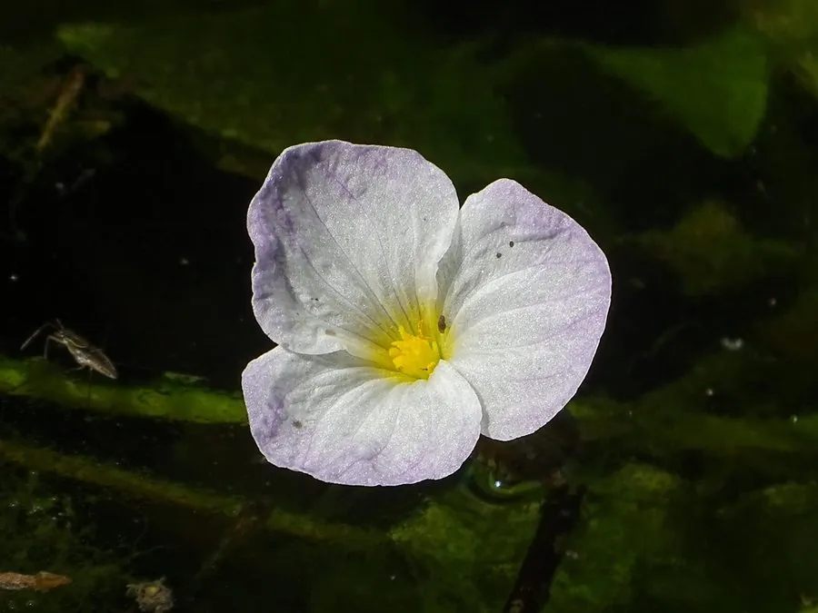

水生植物 · 植物界
水车前 Ottelia alismoides

水鳖科一年生沉水草本，叶片形状随水深变化，花有长梗伸出水面开放，生于池塘水田，是水质的指示植物。
- 分类
- 门被子植物门纲木兰纲目泽泻目科水鳖科属水车前属
- 栖息环境
- 池塘、水田、沟渠的浅水区，喜清澈、阳光充足的静水
- 地理分布
- 广布亚洲与澳大利亚，中国南北淡水水域均有分布
- 保护级别
- 暂无评估
物种志
水车前为水鳖科水车前属一年生沉水草本，茎短缩，叶片基生，形状随水深变化：沉水叶带状或披针形，浮水叶卵形至心形，叶柄长短不一。花单生，白色或淡紫色，有细长的花梗把花托出水面开放，花期 6–9 月；果实为蒴果。
水车前广布于亚洲和澳大利亚的淡水水域，中国各地池塘、水田和沟渠常见，喜温暖、阳光充足和清澈的静水环境，靠种子繁殖。它叶片形状会随水深和光照改变，这种现象称为异叶性；花梗伸出水面开花，便于昆虫传粉。水车前对水质较敏感，常被用作水体环境的指示植物，也可作水族箱观赏水草，但水体污染和栖息地破坏会影响其生存，需要保护其生境。
形态与习性
- 株高沉水草本，花梗可伸出水面
- 花期6–9 月，花白色或淡紫色
- 果期花后结蒴果
- 光照喜充足阳光，需水质清澈
- 水分浅水至 1 米深，静水为宜
- 土壤塘泥或水田淤泥
- 繁殖以种子繁殖为主
- 主要用途水族箱水草、水质指示植物
趣味知识
- 水车前的叶片形状会随水深变化，沉水叶带状、浮水叶卵形，称为异叶性。
- 它的花有细长花梗，能把花托出水面开放，便于昆虫传粉。
- 水车前对水质较敏感，常被用作水体环境的指示植物。
- 它是一年生植物，靠种子繁殖，秋冬枯萎后种子沉入泥中越冬。